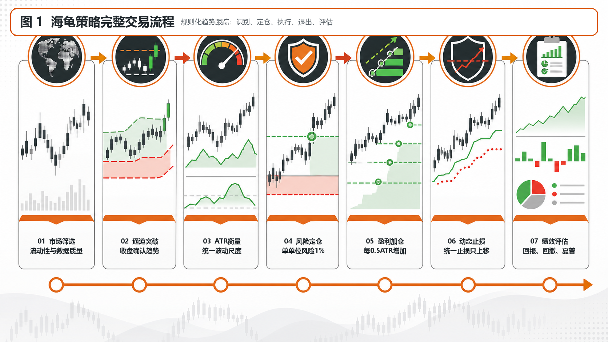
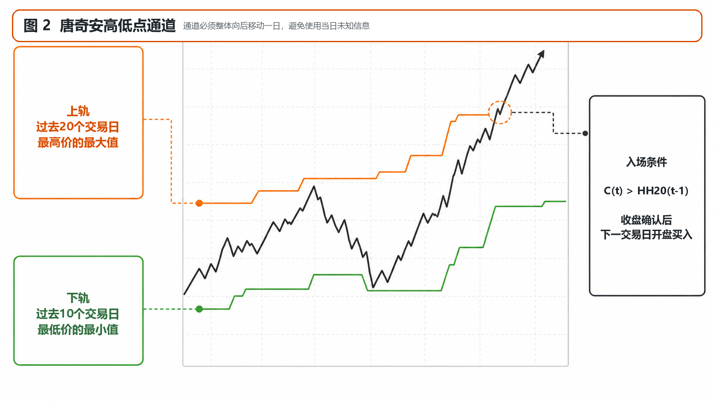
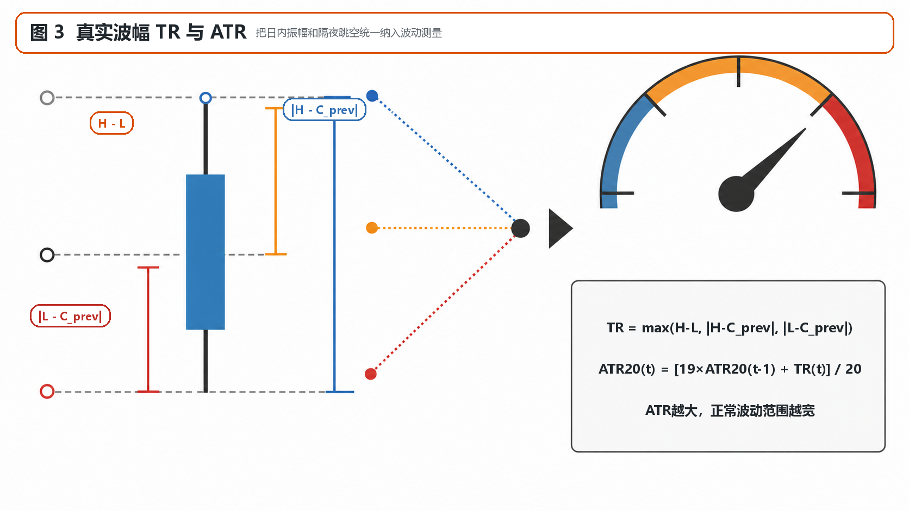
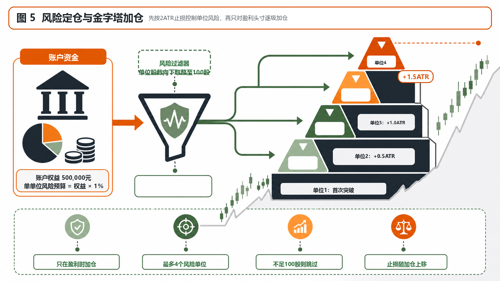
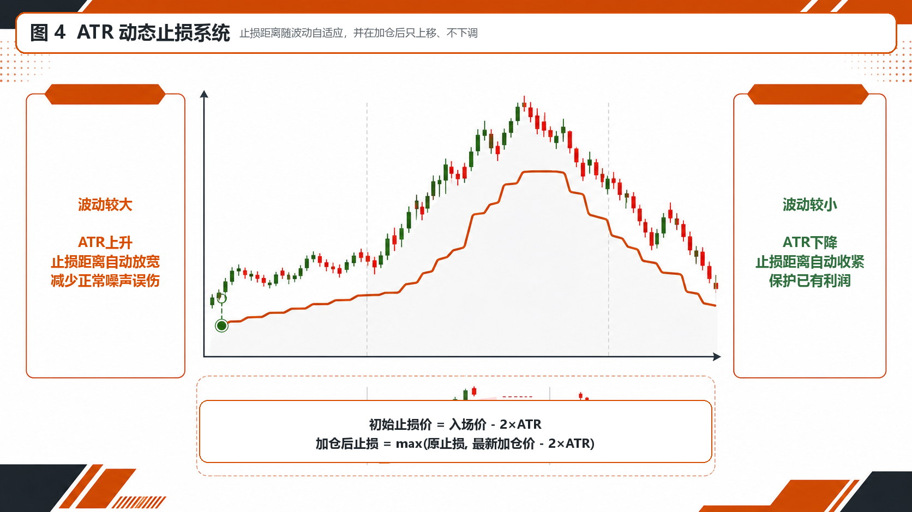

01
海龟策略用来做什么
它不判断股票便宜或昂贵，而是等待价格突破过去一段时间的最高点，确认可能出现的新趋势。信号出现后，系统还会计算买多少、何时加仓、止损放在哪里，以及何时退出。

加载行情后显示当前参数对应的规则状态。
规则条件成立不等于推荐买入，也不代表下一交易日一定上涨。
拖动底部时间轴缩放，悬停查看当日价格、ATR、通道与动作。
--
| 入场日期 | 退出日期 | 单位 | 股数 | 平均入场 | 退出价 | 净损益 | 收益率 | 退出原因 |
|---|
它用价格突破识别趋势，用 ATR 管理波动和仓位，再以加仓、止损和反向通道完成交易生命周期。
它不判断股票便宜或昂贵，而是等待价格突破过去一段时间的最高点，确认可能出现的新趋势。信号出现后，系统还会计算买多少、何时加仓、止损放在哪里，以及何时退出。

默认 20 日入场通道回答“价格是否创出近期新高”，10 日退出通道回答“原有上涨趋势是否已经破坏”。通道整体向后移动一日，避免使用当日尚未完成的数据。

真实波幅同时考虑日内振幅和隔夜跳空。ATR 越大，正常价格波动越宽，因此单位股数应减少、止损距离应放宽。

首次突破只建立第一个单位。价格每向有利方向上涨 0.5 ATR，再增加一个单位，默认最多四个。它与下跌补仓相反：海龟系统只扩大已经被市场证明正确的方向。

初始止损位于入场价下方 2 ATR。每次加仓后止损只能上移，不能因为波动变大而向下放松。波动大时距离自然变宽，波动小时自动收紧。

两者都属于趋势类规则，但观察对象不同，有时在相近日发出信号，却没有必然关系。
本实验室使用完整日线，因此今日信号在收盘后才确认，并假设下一交易日开盘成交。不能使用收盘后才知道的信号，却假设按当天更早价格成交。